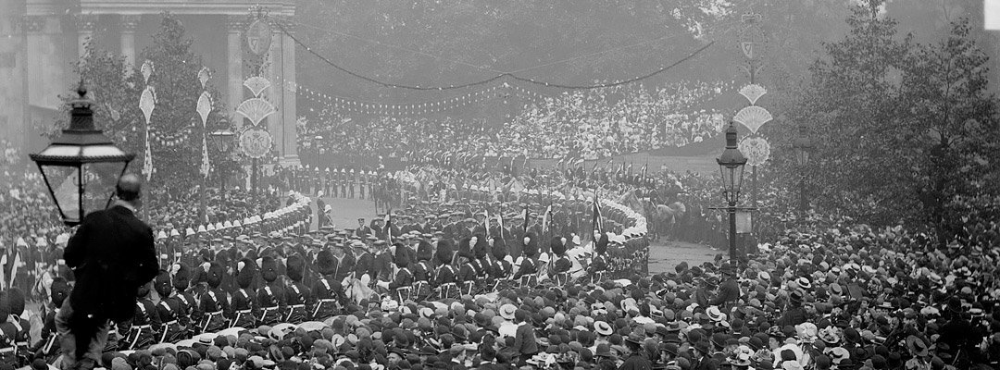

The Duskvol Daily
Gondoliers Gone Grouchy!
Gondoliers throughout the city have gone on strike this week, leading to an almost complete standstill of traffic on the canal throughways that crisscross the city. No word from the gondoliers as to why this has occurred though many speculate it has something to do with the recent influx of ghosts plaguing the waters. When questioned by The Duskvol Daily one gondolier pointed out "You'd be unhappy too if you were being paid minimum wage to navigate an ink black canal where at any moment a ghost could pop up and eat you, or worse your paying customer."
For now their distress remains a mystery, but surely our wonderous and benevolent governor will have them back to work in no time.
Who Is The Weeping Lady? An Investigative Series Part I
If you have lived in Duskvol for any amount of time, you will have heard the rumors of the Weeping Lady, an enigmatic figure often associated with the theft of children. For many years, this folk figure was something that only the lower-class of Charhall would tell their children at night or the ladies of the Nightmarket would gossip over. This reporter even recalls his own mother telling him such ghost stories to make sure he behaved. But we grow up, we stop believing in such nonsense, right? But why? We live in a city filled with ghosts and vampires, why not a mythical child stealing woman? Well it seems she is not just the stuff of idle prattle, for Lady Benthamule claims to have seen a shrowded woman on the very night of her daughters disappearance. Why some may cry hysteria, this reporter can't help but wonder if there isn't something more. Something just waiting beneath the surface. Follow along in this ongoing piece of investigative journalism as we explore Who Is the Weeping Lady?
Lord Governer's Day is Upon us!
That's right denizens of Duskvol, Lord Governor's Day is here! Sure it's hard to tell what season, or even what day it is in our Twilight Town, but you can bet everyone knows when the festivities begin. Due to the gondolier strike this year the parade will be held along the streets and fireworks will likely be banned for safety reasons. In the past the hasn't stopped local gangs for igniting some off the their neighborhoods. This is highly dangerous, and we here at the Daily Duskvol do not condon such actions (but we'll be putting out a list of best places to see the fireworks in tomorrow paper!). This year will include the typical treats and festivities, but the Lord Governor has declared something new this year as well--and apparently it's a surprise! His entire staff were incredibly tight lipped, though very excited. I guess we'll just have to wait and see.